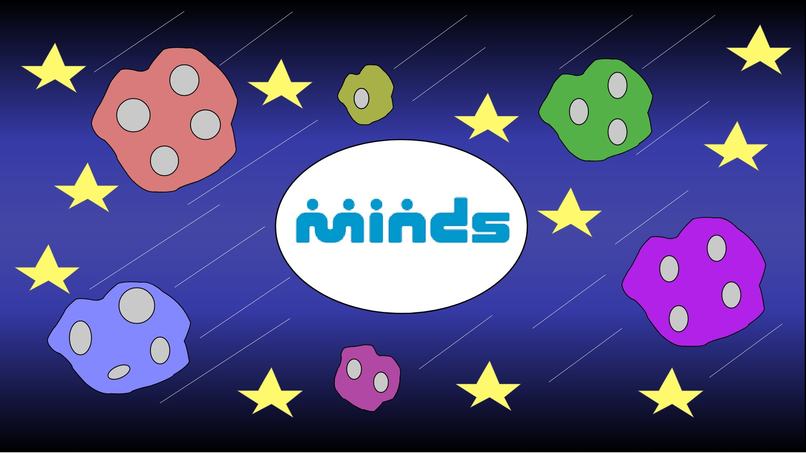
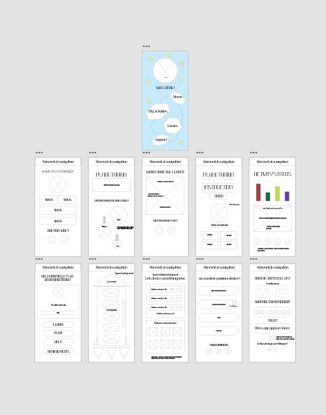
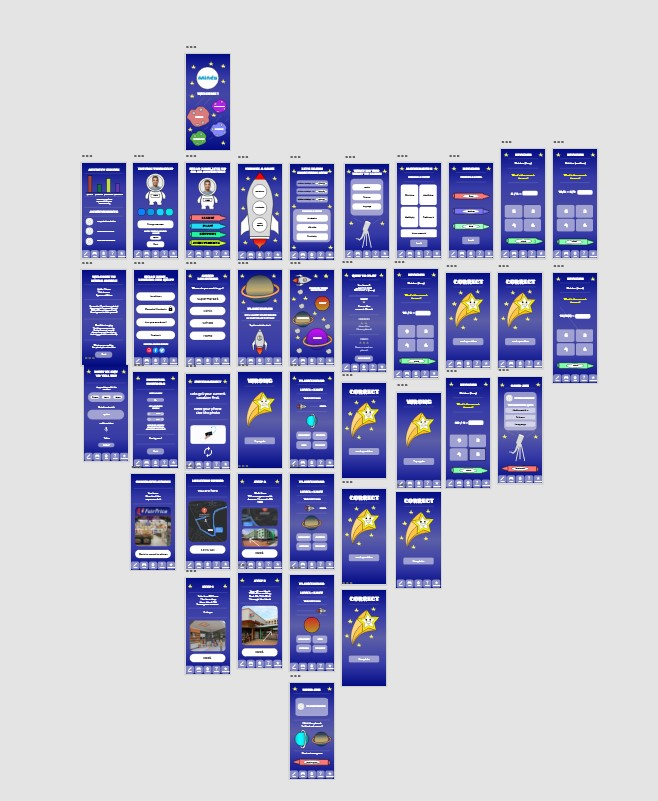
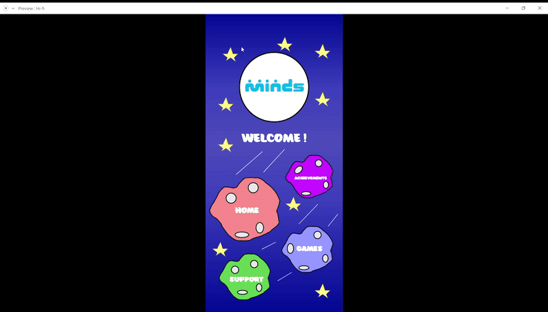

IDEATION

PREFACE
I was tasked to help an organisation develop an application to better improve the educational assistance and development of these students at MINDS. I have developed the app so that it can be used by teachers and students which can allow the school to feel more connected to their students forming a greater bond and care.
WHY DID I MAKE THIS
This application i made it in reference to games space documentaries for kids when i was younger and wanted to make it space themed to tell them that the sky is not the limit. And finally, im doing this as it is a good cause as it improves the lives of people which is one of my aspirations as a designer and a developer.
DESIGN

I then decided to start on making a lofi wireframe as well as a hifi wireframe
using adobe XD to visualise my ideas on a rough layout and placement of
various UI elements around the page
using adobe XD to visualise my ideas on a rough layout and placement of
various UI elements around the page
This is an image of my LOFI wireframe
This is an image of my HIFI wireframe
There was not any set layout for this project as i wanted it to be open and flexible in its structure. i used a simple navigation system at the bottom and also used various cartoon shapes and references like the rocket ships and astronautes which made it more appealing to my audience which were mainly children . This also helps with the design aspect of it to keep them engaged int he activities provided int eh application
DEVELOPMENT
This was my first time tackling many artboards at once and making a full scale application which was
daunting but having most of the
features was beneficial as it allowed me to have a good flow of what events and interactions are
happening across the application
I used minimal effects as it was part of the requirement and to provide ease of use to my audience. The
amount of effects used varies depending on the audience.

Having played around with the use of a no set layout and also incoperating different themes and related designs it has all0wed me to express my emotion through my work using different methods and ideas which are outside my comfort zone but still keeping it modern and fresh which is what differentiates me from other developers.
CONCLUSION